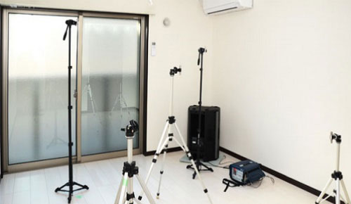
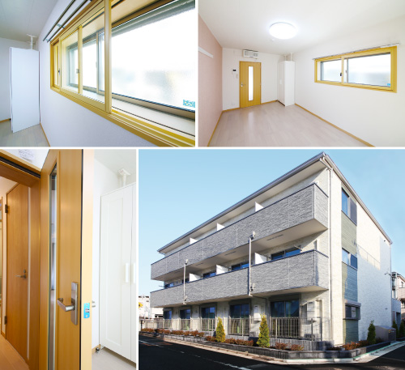
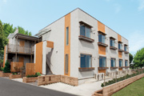
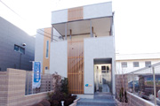
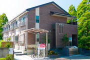
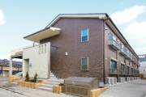
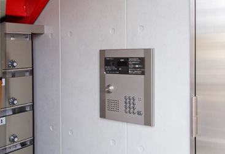
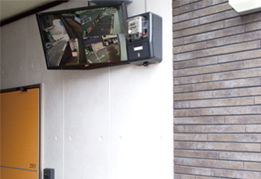
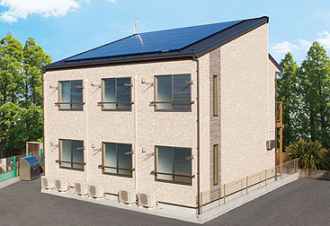

騒音の抑制
遮音設備
制震材の活用と壁構造の工夫、マットやクッション材の採用により、上下階・隣室の生活音や振動による騒音も軽減することができます。
- 
- 音響測定イメージ
■特長
・躯体の振動の伝達を抑制して、音の発生を低減する制震材を左右の壁に設置
・音が伝わりにくくなる壁構造を採用
・上階の床部分に遮音マット・クッション材を設置
防音仕様
防音設備
楽器演奏も可能な防音設備の整った賃貸住宅は、稀少なため大変人気があります。RC造に比べ、コストの低減できる木造でも建築することができます。
- 
- 音大生向けアパート ドゥーカワモトソナーレ〈1棟11戸〉
■特長
・居室を防音室として建築
・居室への入り口には防音扉を設置
・防音可能な二重サッシを採用
地震対策
制震装置
建築時に制震装置「制震ダンパー」の設置により、地震の揺れを受け止めてエネルギーを吸収、建物を守ることができます。
■特長
・揺れを吸収し、建物の変形を減らす
・木造建築に広く適用可能
・繰り返しの余震にも有効
・メンテナンスフリーで、建築後のコストを抑制
制震アパートの施工例
- グリーンハピネス
- リュエル入谷
- ボントーン大谷田
- メゾン･コンフォルト
防犯対策
オートロックシステム
暗証番号や住戸内からの操作で、共同エントランス扉の施錠や解錠を行うセキュリティシステム。外部からの人の出入りを制限することができます。
- 
- 外部からの出入りを制限することができるセキュリティシステム
オーネスト西新井〈1棟14戸〉
■特長
・室内モニターで来訪者の確認ができる
・不審者の侵入をエントランスで防止
・不必要な勧誘業者の来訪を断れる
・入居者ニーズが高く、他のアパートとの差別化も可能
防犯カメラ
カメラをエントランスや廊下など共有部分に設置することで不審者の侵入を監視、犯罪を抑制します。モニターは別室での観察のほか、通路等へも設置できます。
- 
- 4箇所の防犯カメラからの映像がを映すモニター
ル・ソレイユ〈1棟8戸〉
■特長
・室内モニターで来訪者の確認ができる
・不審者の侵入をエントランスで防止
・不必要な勧誘業者の来訪を断れる
・入居者ニーズが高く、他のアパートとの差別化も可能
省エネルギー・環境保護
太陽光発電
ソーラーパネルの設置による自家発電装置です。発電した電力は共同住宅での利用のほか売電も可能です。
- 
- 新築アパートへのソーラーパネル設置例
Uハイム〈1棟6戸〉
■特長
・共同住宅は一般住宅に比べ屋根が広いため、発電量が多い
・発電した電気は、共用部分での使用も可能
・余剰電力を電力会社へ売電可能
・設置費用は国や自治体から補助を受けられる場合もある
オール電化アパート
ガスを使用しないため、CO2の排出を低減し環境にやさしいオール電化住宅。ガスに関するメンテナンスが不要で、火災の発生を大幅に抑制できます。
■特長
・ガスコンロ等、ガスに関係する火災のリスクがない
・建築時にガスの配管工事が不要
・ガス漏れ検査など、ガスに関するメンテナンスが不要
・条件により、火災保険の割引等の利用も可能（一部保険会社）